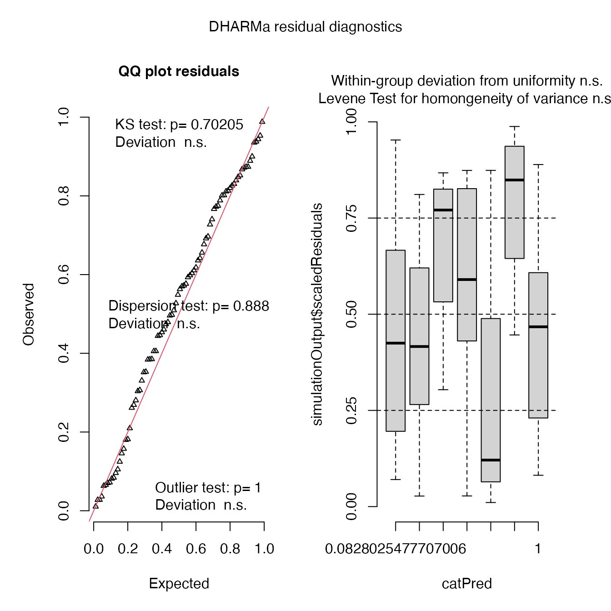
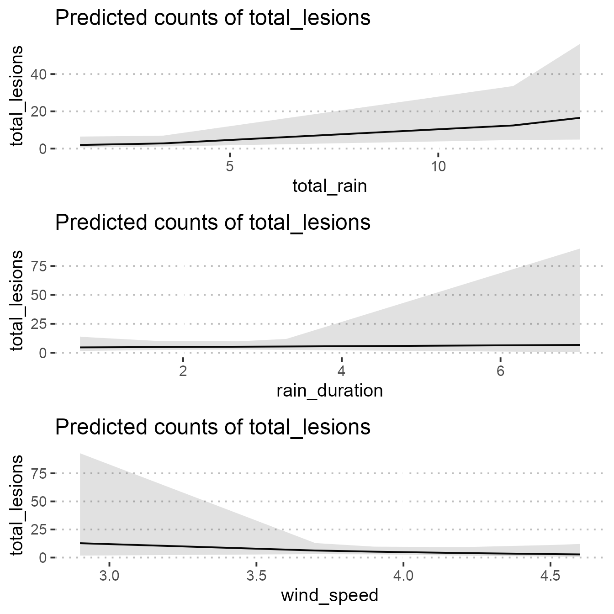

Fit GLMMs
2021-07-14
a03_Fit_GLMMs.RmdLoad libraries
library("readxl")
library("tidyverse")
library("dplyr")
library("glmmTMB")
library("DHARMa")
library("ggeffects")
library("here")
library("gridExtra")
library("rainy")
library("lubridate")
library("ggpubr")Import data
# event data includes dates and time out and removed, exposure hours and
# assessment date
event_data <- read_csv(system.file(
"extdata",
"exposure_events.csv",
package = "rainy",
mustWork = TRUE
)) %>%
mutate(
date_time_out = dmy_hm(date_time_out),
date_time_removed = dmy_hm(date_time_removed),
exposed = interval(date_time_out, date_time_removed)
)
lesion_data <- read_csv(system.file(
"extdata",
"lesion_data.csv",
package = "rainy",
mustWork = TRUE
)) %>%
pivot_longer(cols = plant_1:plant_3,
names_to = "plant",
values_to = "lesions") %>%
group_by(rainfall_event, pot) %>%
summarise(total_lesions = sum(lesions, na.rm = TRUE),
mean_lesions = round(mean(lesions), 1))Create object for analysis
Lastly we import the weather data and then:
- filter for only the dates/times with plants deployed,
- summarise by rainfall event, and then
- join with the lesion data.
dat <- read_csv(system.file(
"extdata",
"weather_data.csv",
package = "rainy",
mustWork = TRUE
)) %>%
mutate(
Date_time = round_date(dmy_hms(paste(Date, Time)), "minute"),
rain_duration = as.integer(`TOTAL Rain Gauge mm` > 0),
rainfall_event = case_when(
Date_time %within% event_data[1, "exposed"] ~ 1,
Date_time %within% event_data[2, "exposed"] ~ 2,
Date_time %within% event_data[3, "exposed"] ~ 3,
Date_time %within% event_data[4, "exposed"] ~ 4,
Date_time %within% event_data[5, "exposed"] ~ 5,
Date_time %within% event_data[6, "exposed"] ~ 6,
Date_time %within% event_data[7, "exposed"] ~ 7
)
) %>%
filter(
Date_time %within% event_data[1, "exposed"] |
Date_time %within% event_data[2, "exposed"] |
Date_time %within% event_data[3, "exposed"] |
Date_time %within% event_data[4, "exposed"] |
Date_time %within% event_data[5, "exposed"] |
Date_time %within% event_data[6, "exposed"] |
Date_time %within% event_data[7, "exposed"]
) %>%
group_by(rainfall_event) %>%
summarise(
wind_direction = round(circular.averaging(`AVERAGE Wind Direction Degs`), 1),
total_rain = sum(`TOTAL Rain Gauge mm`),
rain_duration = round(sum(rain_duration / 6), 1),
temp = round(mean(`AVERAGE Air Temperature DegC`), 1),
relative_humidity = round(mean(`AVERAGE Relative Humidity %`), 1),
wind_speed = round(mean(`AVERAGE Wind Speed km/h`) * 0.277778, 1) # convert to m/s
) %>%
left_join(lesion_data, by = "rainfall_event") %>%
mutate(rainfall_event = as.factor(rainfall_event))Check the data.
kableExtra::kable(dat,
format = "html",
table.attr = "class='table table-hover'")| rainfall_event | wind_direction | total_rain | rain_duration | temp | relative_humidity | wind_speed | pot | total_lesions | mean_lesions |
|---|---|---|---|---|---|---|---|---|---|
| 1 | 93.7 | 1.4 | 0.8 | 19.6 | 89.6 | 4.2 | 1 | 0 | 0.0 |
| 1 | 93.7 | 1.4 | 0.8 | 19.6 | 89.6 | 4.2 | 2 | 1 | 0.3 |
| 1 | 93.7 | 1.4 | 0.8 | 19.6 | 89.6 | 4.2 | 3 | 0 | 0.0 |
| 1 | 93.7 | 1.4 | 0.8 | 19.6 | 89.6 | 4.2 | 4 | 1 | 0.3 |
| 1 | 93.7 | 1.4 | 0.8 | 19.6 | 89.6 | 4.2 | 5 | 0 | 0.0 |
| 1 | 93.7 | 1.4 | 0.8 | 19.6 | 89.6 | 4.2 | 6 | 0 | 0.0 |
| 1 | 93.7 | 1.4 | 0.8 | 19.6 | 89.6 | 4.2 | 7 | 0 | 0.0 |
| 1 | 93.7 | 1.4 | 0.8 | 19.6 | 89.6 | 4.2 | 8 | 0 | 0.0 |
| 1 | 93.7 | 1.4 | 0.8 | 19.6 | 89.6 | 4.2 | 9 | 0 | 0.0 |
| 1 | 93.7 | 1.4 | 0.8 | 19.6 | 89.6 | 4.2 | 10 | 0 | 0.0 |
| 1 | 93.7 | 1.4 | 0.8 | 19.6 | 89.6 | 4.2 | 11 | 0 | 0.0 |
| 1 | 93.7 | 1.4 | 0.8 | 19.6 | 89.6 | 4.2 | 12 | 0 | 0.0 |
| 2 | 87.1 | 2.8 | 0.7 | 21.0 | 83.2 | 3.7 | 1 | 5 | 1.7 |
| 2 | 87.1 | 2.8 | 0.7 | 21.0 | 83.2 | 3.7 | 2 | 7 | 2.3 |
| 2 | 87.1 | 2.8 | 0.7 | 21.0 | 83.2 | 3.7 | 3 | 7 | 2.3 |
| 2 | 87.1 | 2.8 | 0.7 | 21.0 | 83.2 | 3.7 | 4 | 0 | 0.0 |
| 2 | 87.1 | 2.8 | 0.7 | 21.0 | 83.2 | 3.7 | 5 | 1 | 0.3 |
| 2 | 87.1 | 2.8 | 0.7 | 21.0 | 83.2 | 3.7 | 6 | 10 | 3.3 |
| 2 | 87.1 | 2.8 | 0.7 | 21.0 | 83.2 | 3.7 | 7 | 0 | 0.0 |
| 2 | 87.1 | 2.8 | 0.7 | 21.0 | 83.2 | 3.7 | 8 | 1 | 0.3 |
| 2 | 87.1 | 2.8 | 0.7 | 21.0 | 83.2 | 3.7 | 9 | 1 | 0.3 |
| 2 | 87.1 | 2.8 | 0.7 | 21.0 | 83.2 | 3.7 | 10 | 0 | 0.0 |
| 2 | 87.1 | 2.8 | 0.7 | 21.0 | 83.2 | 3.7 | 11 | 0 | 0.0 |
| 2 | 87.1 | 2.8 | 0.7 | 21.0 | 83.2 | 3.7 | 12 | 0 | 0.0 |
| 3 | 95.4 | 3.4 | 1.7 | 20.3 | 90.1 | 4.5 | 1 | 0 | 0.0 |
| 3 | 95.4 | 3.4 | 1.7 | 20.3 | 90.1 | 4.5 | 2 | 0 | 0.0 |
| 3 | 95.4 | 3.4 | 1.7 | 20.3 | 90.1 | 4.5 | 3 | 3 | 1.0 |
| 3 | 95.4 | 3.4 | 1.7 | 20.3 | 90.1 | 4.5 | 4 | 4 | 1.3 |
| 3 | 95.4 | 3.4 | 1.7 | 20.3 | 90.1 | 4.5 | 5 | 0 | 0.0 |
| 3 | 95.4 | 3.4 | 1.7 | 20.3 | 90.1 | 4.5 | 6 | 1 | 0.3 |
| 3 | 95.4 | 3.4 | 1.7 | 20.3 | 90.1 | 4.5 | 7 | 1 | 0.3 |
| 3 | 95.4 | 3.4 | 1.7 | 20.3 | 90.1 | 4.5 | 8 | 1 | 0.3 |
| 3 | 95.4 | 3.4 | 1.7 | 20.3 | 90.1 | 4.5 | 9 | 0 | 0.0 |
| 3 | 95.4 | 3.4 | 1.7 | 20.3 | 90.1 | 4.5 | 10 | 1 | 0.3 |
| 3 | 95.4 | 3.4 | 1.7 | 20.3 | 90.1 | 4.5 | 11 | 2 | 0.7 |
| 3 | 95.4 | 3.4 | 1.7 | 20.3 | 90.1 | 4.5 | 12 | 2 | 0.7 |
| 4 | 198.1 | 13.4 | 7.0 | 10.5 | 76.8 | 2.9 | 1 | 41 | NA |
| 4 | 198.1 | 13.4 | 7.0 | 10.5 | 76.8 | 2.9 | 2 | 58 | NA |
| 4 | 198.1 | 13.4 | 7.0 | 10.5 | 76.8 | 2.9 | 3 | 121 | 40.3 |
| 4 | 198.1 | 13.4 | 7.0 | 10.5 | 76.8 | 2.9 | 4 | 46 | 15.3 |
| 4 | 198.1 | 13.4 | 7.0 | 10.5 | 76.8 | 2.9 | 5 | 12 | NA |
| 4 | 198.1 | 13.4 | 7.0 | 10.5 | 76.8 | 2.9 | 6 | 15 | NA |
| 4 | 198.1 | 13.4 | 7.0 | 10.5 | 76.8 | 2.9 | 7 | 30 | 10.0 |
| 4 | 198.1 | 13.4 | 7.0 | 10.5 | 76.8 | 2.9 | 8 | 22 | 7.3 |
| 4 | 198.1 | 13.4 | 7.0 | 10.5 | 76.8 | 2.9 | 9 | 65 | NA |
| 4 | 198.1 | 13.4 | 7.0 | 10.5 | 76.8 | 2.9 | 10 | 48 | 16.0 |
| 4 | 198.1 | 13.4 | 7.0 | 10.5 | 76.8 | 2.9 | 11 | 67 | NA |
| 4 | 198.1 | 13.4 | 7.0 | 10.5 | 76.8 | 2.9 | 12 | 72 | NA |
| 5 | 236.3 | 13.4 | 3.3 | 10.6 | 82.9 | 3.7 | 1 | 55 | 18.3 |
| 5 | 236.3 | 13.4 | 3.3 | 10.6 | 82.9 | 3.7 | 2 | 41 | 13.7 |
| 5 | 236.3 | 13.4 | 3.3 | 10.6 | 82.9 | 3.7 | 3 | 83 | 27.7 |
| 5 | 236.3 | 13.4 | 3.3 | 10.6 | 82.9 | 3.7 | 4 | 17 | 5.7 |
| 5 | 236.3 | 13.4 | 3.3 | 10.6 | 82.9 | 3.7 | 5 | 29 | 9.7 |
| 5 | 236.3 | 13.4 | 3.3 | 10.6 | 82.9 | 3.7 | 6 | 41 | 13.7 |
| 5 | 236.3 | 13.4 | 3.3 | 10.6 | 82.9 | 3.7 | 7 | 75 | 25.0 |
| 5 | 236.3 | 13.4 | 3.3 | 10.6 | 82.9 | 3.7 | 8 | 15 | 5.0 |
| 5 | 236.3 | 13.4 | 3.3 | 10.6 | 82.9 | 3.7 | 9 | 20 | 6.7 |
| 5 | 236.3 | 13.4 | 3.3 | 10.6 | 82.9 | 3.7 | 10 | 51 | 17.0 |
| 5 | 236.3 | 13.4 | 3.3 | 10.6 | 82.9 | 3.7 | 11 | 72 | 24.0 |
| 5 | 236.3 | 13.4 | 3.3 | 10.6 | 82.9 | 3.7 | 12 | 69 | 23.0 |
| 6 | 249.3 | 11.8 | 2.7 | 10.3 | 83.0 | 3.9 | 1 | 6 | 2.0 |
| 6 | 249.3 | 11.8 | 2.7 | 10.3 | 83.0 | 3.9 | 2 | 12 | 4.0 |
| 6 | 249.3 | 11.8 | 2.7 | 10.3 | 83.0 | 3.9 | 3 | 0 | 0.0 |
| 6 | 249.3 | 11.8 | 2.7 | 10.3 | 83.0 | 3.9 | 4 | 0 | 0.0 |
| 6 | 249.3 | 11.8 | 2.7 | 10.3 | 83.0 | 3.9 | 5 | 0 | 0.0 |
| 6 | 249.3 | 11.8 | 2.7 | 10.3 | 83.0 | 3.9 | 6 | 6 | 2.0 |
| 6 | 249.3 | 11.8 | 2.7 | 10.3 | 83.0 | 3.9 | 7 | 39 | 13.0 |
| 6 | 249.3 | 11.8 | 2.7 | 10.3 | 83.0 | 3.9 | 8 | 1 | 0.3 |
| 6 | 249.3 | 11.8 | 2.7 | 10.3 | 83.0 | 3.9 | 9 | 17 | 5.7 |
| 6 | 249.3 | 11.8 | 2.7 | 10.3 | 83.0 | 3.9 | 10 | 0 | 0.0 |
| 6 | 249.3 | 11.8 | 2.7 | 10.3 | 83.0 | 3.9 | 11 | 0 | 0.0 |
| 6 | 249.3 | 11.8 | 2.7 | 10.3 | 83.0 | 3.9 | 12 | 0 | 0.0 |
| 7 | 83.1 | 1.4 | 0.7 | 21.2 | 70.3 | 4.6 | 1 | 0 | 0.0 |
| 7 | 83.1 | 1.4 | 0.7 | 21.2 | 70.3 | 4.6 | 2 | 0 | 0.0 |
| 7 | 83.1 | 1.4 | 0.7 | 21.2 | 70.3 | 4.6 | 3 | 0 | 0.0 |
| 7 | 83.1 | 1.4 | 0.7 | 21.2 | 70.3 | 4.6 | 4 | 0 | 0.0 |
| 7 | 83.1 | 1.4 | 0.7 | 21.2 | 70.3 | 4.6 | 5 | 0 | 0.0 |
| 7 | 83.1 | 1.4 | 0.7 | 21.2 | 70.3 | 4.6 | 6 | 0 | 0.0 |
| 7 | 83.1 | 1.4 | 0.7 | 21.2 | 70.3 | 4.6 | 7 | 5 | 1.7 |
| 7 | 83.1 | 1.4 | 0.7 | 21.2 | 70.3 | 4.6 | 8 | 0 | 0.0 |
| 7 | 83.1 | 1.4 | 0.7 | 21.2 | 70.3 | 4.6 | 9 | 0 | 0.0 |
| 7 | 83.1 | 1.4 | 0.7 | 21.2 | 70.3 | 4.6 | 10 | 0 | 0.0 |
| 7 | 83.1 | 1.4 | 0.7 | 21.2 | 70.3 | 4.6 | 11 | 0 | 0.0 |
| 7 | 83.1 | 1.4 | 0.7 | 21.2 | 70.3 | 4.6 | 12 | 0 | 0.0 |
Use set.seed() for reproducibility purposes
set.seed(42)Model_1 (All variables)
Include all variables with rainfall event as a random effect.
mod1 <-
glmmTMB(
total_lesions ~ total_rain +
rain_duration +
relative_humidity +
temp +
wind_speed +
wind_direction +
(1 | rainfall_event),
family = nbinom1,
data = dat
)## Warning in (function (start, objective, gradient = NULL, hessian = NULL, : NA/
## NaN function evaluation
summary(mod1)## Family: nbinom1 ( log )
## Formula:
## total_lesions ~ total_rain + rain_duration + relative_humidity +
## temp + wind_speed + wind_direction + (1 | rainfall_event)
## Data: dat
##
## AIC BIC logLik deviance df.resid
## 426.0 447.9 -204.0 408.0 75
##
## Random effects:
##
## Conditional model:
## Groups Name Variance Std.Dev.
## rainfall_event (Intercept) 5.547e-18 2.355e-09
## Number of obs: 84, groups: rainfall_event, 7
##
## Dispersion parameter for nbinom1 family (): 12.4
##
## Conditional model:
## Estimate Std. Error z value Pr(>|z|)
## (Intercept) 5.790966 NaN NaN NaN
## total_rain 1.221316 NaN NaN NaN
## rain_duration -0.694841 NaN NaN NaN
## relative_humidity 0.055962 NaN NaN NaN
## temp -0.257993 NaN NaN NaN
## wind_speed -0.009763 NaN NaN NaN
## wind_direction -0.075632 NaN NaN NaNThe model summary suggest that there are not enough degrees of freedom to fit a complicated model. We can drop relative humidity and temperature because we directly transferred plants to a controlled environment with 20 degree Celsius temperature and 100 % RH
Model_2
Drop relative humidity and temperature
mod2 <-
glmmTMB(
total_lesions ~ total_rain +
rain_duration +
wind_speed +
wind_direction + (1 | rainfall_event),
family = nbinom1,
data = dat
)## Warning in (function (start, objective, gradient = NULL, hessian = NULL, : NA/
## NaN function evaluation
summary(mod2)## Family: nbinom1 ( log )
## Formula:
## total_lesions ~ total_rain + rain_duration + wind_speed + wind_direction +
## (1 | rainfall_event)
## Data: dat
##
## AIC BIC logLik deviance df.resid
## 423.7 440.8 -204.9 409.7 77
##
## Random effects:
##
## Conditional model:
## Groups Name Variance Std.Dev.
## rainfall_event (Intercept) 5.684e-10 2.384e-05
## Number of obs: 84, groups: rainfall_event, 7
##
## Dispersion parameter for nbinom1 family (): 12.4
##
## Conditional model:
## Estimate Std. Error z value Pr(>|z|)
## (Intercept) 2.87153 2.17801 1.318 0.18736
## total_rain 1.25112 0.25352 4.935 8.01e-07 ***
## rain_duration -0.58801 0.17224 -3.414 0.00064 ***
## wind_speed 0.21327 0.53217 0.401 0.68860
## wind_direction -0.06191 0.01487 -4.164 3.13e-05 ***
## ---
## Signif. codes: 0 '***' 0.001 '**' 0.01 '*' 0.05 '.' 0.1 ' ' 1We can see that model has been successful converged. But getting a warning message
Model_3
Remove wind speed as it is not significant
mod3 <-
glmmTMB(
total_lesions ~ total_rain +
rain_duration +
wind_direction + (1 | rainfall_event),
family = nbinom1,
data = dat
)## Warning in (function (start, objective, gradient = NULL, hessian = NULL, : NA/
## NaN function evaluation
summary(mod3)## Family: nbinom1 ( log )
## Formula:
## total_lesions ~ total_rain + rain_duration + wind_direction +
## (1 | rainfall_event)
## Data: dat
##
## AIC BIC logLik deviance df.resid
## 421.9 436.5 -205.0 409.9 78
##
## Random effects:
##
## Conditional model:
## Groups Name Variance Std.Dev.
## rainfall_event (Intercept) 4.131e-10 2.032e-05
## Number of obs: 84, groups: rainfall_event, 7
##
## Dispersion parameter for nbinom1 family (): 12.4
##
## Conditional model:
## Estimate Std. Error z value Pr(>|z|)
## (Intercept) 3.69821 0.77355 4.781 1.75e-06 ***
## total_rain 1.22252 0.23032 5.308 1.11e-07 ***
## rain_duration -0.61273 0.16398 -3.737 0.000186 ***
## wind_direction -0.06013 0.01342 -4.481 7.42e-06 ***
## ---
## Signif. codes: 0 '***' 0.001 '**' 0.01 '*' 0.05 '.' 0.1 ' ' 1Again getting a warning message. And the negative impact of increasing rain duration and wind direction does not make any biological sense
Model_4
Replace wind direction with wind speed if the warning message could be removed
mod4 <-
glmmTMB(
total_lesions ~
total_rain +
rain_duration +
wind_speed +
(1 | rainfall_event),
family = nbinom1,
data = dat
)
summary(mod4)## Family: nbinom1 ( log )
## Formula:
## total_lesions ~ total_rain + rain_duration + wind_speed + (1 |
## rainfall_event)
## Data: dat
##
## AIC BIC logLik deviance df.resid
## 437.6 452.2 -212.8 425.6 78
##
## Random effects:
##
## Conditional model:
## Groups Name Variance Std.Dev.
## rainfall_event (Intercept) 0.3794 0.616
## Number of obs: 84, groups: rainfall_event, 7
##
## Dispersion parameter for nbinom1 family (): 13.6
##
## Conditional model:
## Estimate Std. Error z value Pr(>|z|)
## (Intercept) 3.77220 4.27811 0.882 0.3779
## total_rain 0.17733 0.08854 2.003 0.0452 *
## rain_duration 0.06054 0.27810 0.218 0.8277
## wind_speed -0.88854 0.96164 -0.924 0.3555
## ---
## Signif. codes: 0 '***' 0.001 '**' 0.01 '*' 0.05 '.' 0.1 ' ' 1The warning message has gone now. The reason is that wind direction did not vary much during different rainfall events, whereas wind speed varied. We can go with mod4.
Best fit model mod4 diagnostics
Check over-dispersion
Check for over-dispersion using custom function created by Ben Bolker. Here is the link.
overdisp_fun <- function(model) {
rdf <- df.residual(model)
rp <- residuals(model, type = "pearson")
Pearson.chisq <- sum(rp ^ 2)
prat <- Pearson.chisq / rdf
pval <- pchisq(Pearson.chisq, df = rdf, lower.tail = FALSE)
c(
chisq = Pearson.chisq,
ratio = prat,
rdf = rdf,
p = pval
)
}
overdisp_fun(mod4)## chisq ratio rdf p
## 48.8352552 0.6260930 78.0000000 0.9960638The larger p value shows that there is no significant over-dispersion.
Simulate residuals
simulateResiduals(mod4, plot = T, quantreg = T)
## Object of Class DHARMa with simulated residuals based on 250 simulations with refit = FALSE . See ?DHARMa::simulateResiduals for help.
##
## Scaled residual values: 0.02734823 0.8010679 0.3530158 0.8112905 0.2689484 0.6919764 0.3306609 0.4959772 0.1051955 0.2615026 0.4790774 0.5486829 0.8133635 0.8478606 0.8395191 0.3517644 0.6036274 0.8738153 0.02767958 0.6416688 ...Very close observed and predicted values
Check zero-inflation
testZeroInflation(mod4)
##
## DHARMa zero-inflation test via comparison to expected zeros with
## simulation under H0 = fitted model
##
## data: simulationOutput
## ratioObsSim = 0.99767, p-value = 1
## alternative hypothesis: two.sidedNo zero inflation detected
Check overall performance
performance::check_model(mod4, panel = FALSE)


The model fit non-linear model data distribution assumption, close observed vs. fitted values and there is no significant collinearity between predictors.
Plot best fit model
f1 <-
plot(ggpredict(mod4, "total_rain")) +
theme_pubclean(base_family = "Arial", base_size = 15)
f2 <-
plot(ggpredict(mod4 , "rain_duration")) +
theme_pubclean(base_family = "Arial", base_size = 15)
f3 <-
plot(ggpredict(mod4, "wind_speed")) +
theme_pubclean(base_family = "Arial", base_size = 15)
fig_4 <- grid.arrange(f1, f2, f3)
fig_4## TableGrob (3 x 1) "arrange": 3 grobs
## z cells name grob
## 1 1 (1-1,1-1) arrange gtable[layout]
## 2 2 (2-2,1-1) arrange gtable[layout]
## 3 3 (3-3,1-1) arrange gtable[layout]Colophon
## R version 4.1.0 (2021-05-18)
## Platform: x86_64-apple-darwin17.0 (64-bit)
## Running under: macOS Catalina 10.15.6
##
## Matrix products: default
## BLAS: /Library/Frameworks/R.framework/Versions/4.1/Resources/lib/libRblas.dylib
## LAPACK: /Library/Frameworks/R.framework/Versions/4.1/Resources/lib/libRlapack.dylib
##
## locale:
## [1] en_AU.UTF-8/en_AU.UTF-8/en_AU.UTF-8/C/en_AU.UTF-8/en_AU.UTF-8
##
## attached base packages:
## [1] stats graphics grDevices utils datasets methods base
##
## other attached packages:
## [1] ggpubr_0.4.0 lubridate_1.7.10 rainy_0.0.0.9000 gridExtra_2.3
## [5] here_1.0.1 ggeffects_1.1.0 DHARMa_0.4.2 glmmTMB_1.1.1
## [9] forcats_0.5.1 stringr_1.4.0 dplyr_1.0.7 purrr_0.3.4
## [13] readr_1.4.0 tidyr_1.1.3 tibble_3.1.2 ggplot2_3.3.5
## [17] tidyverse_1.3.1 readxl_1.3.1
##
## loaded via a namespace (and not attached):
## [1] minqa_1.2.4 colorspace_2.0-2 ggsignif_0.6.2
## [4] ggridges_0.5.3 ellipsis_0.3.2 rio_0.5.27
## [7] sjlabelled_1.1.8 rprojroot_2.0.2 parameters_0.14.0
## [10] fs_1.5.0 rstudioapi_0.13 farver_2.1.0
## [13] fansi_0.5.0 xml2_1.3.2 codetools_0.2-18
## [16] splines_4.1.0 robustbase_0.93-8 cachem_1.0.5
## [19] knitr_1.33 jsonlite_1.7.2 nloptr_1.2.2.2
## [22] broom_0.7.8 dbplyr_2.1.1 effectsize_0.4.5
## [25] compiler_4.1.0 httr_1.4.2 backports_1.2.1
## [28] assertthat_0.2.1 Matrix_1.3-3 fastmap_1.1.0
## [31] cli_3.0.0 htmltools_0.5.1.1 tools_4.1.0
## [34] gtable_0.3.0 glue_1.4.2 Rcpp_1.0.6
## [37] carData_3.0-4 cellranger_1.1.0 jquerylib_0.1.4
## [40] pkgdown_1.6.1 vctrs_0.3.8 svglite_2.0.0
## [43] nlme_3.1-152 iterators_1.0.13 insight_0.14.2
## [46] xfun_0.24 openxlsx_4.2.4 lme4_1.1-27.1
## [49] rvest_1.0.0 lifecycle_1.0.0 rstatix_0.7.0
## [52] DEoptimR_1.0-9 MASS_7.3-54 scales_1.1.1
## [55] ragg_1.1.3 hms_1.1.0 qqplotr_0.0.5
## [58] TMB_1.7.20 yaml_2.2.1 curl_4.3.2
## [61] see_0.6.4 memoise_2.0.0 sass_0.4.0
## [64] stringi_1.6.2 bayestestR_0.10.0 highr_0.9
## [67] desc_1.3.0 gap_1.2.3-1 foreach_1.5.1
## [70] boot_1.3-28 zip_2.2.0 rlang_0.4.11
## [73] pkgconfig_2.0.3 systemfonts_1.0.2 evaluate_0.14
## [76] lattice_0.20-44 labeling_0.4.2 tidyselect_1.1.1
## [79] plyr_1.8.6 magrittr_2.0.1 R6_2.5.0
## [82] generics_0.1.0 DBI_1.1.1 mgcv_1.8-35
## [85] pillar_1.6.1 haven_2.4.1 foreign_0.8-81
## [88] withr_2.4.2 abind_1.4-5 performance_0.7.2
## [91] modelr_0.1.8 crayon_1.4.1 car_3.0-11
## [94] utf8_1.2.1 rmarkdown_2.9 grid_4.1.0
## [97] data.table_1.14.0 reprex_2.0.0 digest_0.6.27
## [100] webshot_0.5.2 numDeriv_2016.8-1.1 textshaping_0.3.5
## [103] munsell_0.5.0 viridisLite_0.4.0 kableExtra_1.3.4
## [106] bslib_0.2.5.1